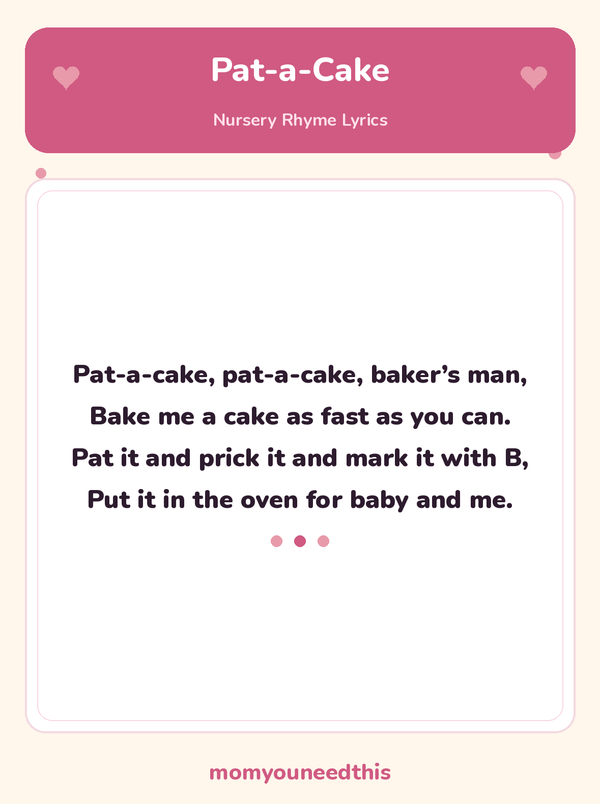

Pat-a-Cake The Classic Clapping Rhyme for Babies and Toddlers
Pat-a-Cake is a traditional action nursery rhyme for babies and toddlers — clap, pat and mime baking a cake together, then mark it with your child’s own initial. The full lyrics are below, with a free printable lyrics sheet to keep by the highchair. No signup, just print.
Last updated: October 25, 2026
Quick Answer
Pat-a-Cake is a traditional action nursery rhyme for babies and toddlers, sung while clapping and miming baking a cake. The full lyrics are on this page — including the mark-it-with-B line, where families swap in the child’s own initial — and on the free printable lyrics sheet to print at home.
At a Glance
- Rhyme: Pat-a-Cake
- Type: Action rhyme (clapping game)
- Best for: Babies & toddlers, 6 months–3 years
- Printable: 1 lyrics sheet
- Tradition: In print since 1698
- Cost: Free — print at home
🎵 Pat-a-Cake Lyrics
The classic verse — sing it with the actions below, and swap in your child’s own initial for the B.
Pat-a-cake, pat-a-cake, baker’s man,
Bake me a cake as fast as you can.
Pat it and prick it and mark it with B,
Put it in the oven for baby and me.

✂️ Download Your Free Pat-a-Cake Lyrics Sheet
The full Pat-a-Cake lyrics on one big, clear sheet — made for fridges and singing together.
⬇️ Download Free Lyrics Sheet 🖨️ Print🎁 Free printable for babies & toddlers
🎂 Sing It Together: The Pat-a-Cake Actions
Pat-a-Cake is sung with your hands, not just your voice. Sit face to face — a baby on your lap, a toddler opposite you — and clap along together on “Pat-a-cake, pat-a-cake”: pat your own knees, then clap, then pat your child’s hands, in whatever rhythm you can keep. Perfect timing does not matter; the back-and-forth is the game.
On “Pat it and prick it” mime patting a cake flat and pricking it with a fingertip, then “mark it with B” — draw the letter on your child’s open palm with your finger. The B stands for baby, and families have always swapped it: mark it with S for Sam, with L for Lily, and change the last line to match — “for Sam and me.” That one small change makes the rhyme belong to your child.
Finish by miming the cake going into the oven — hands together, push them gently forward — then a big “and me” cuddle or tickle at the end. Babies who cannot clap yet still play: tap the actions on their hands and feet, and let them kick along to the rhythm.
🖨️ How to Use This Rhyme
- Sit face to face and clap. Lap, highchair or floor all work. Clap your hands, then pat your child’s hands, keeping a steady, bouncy beat.
- Add the baking actions. Pat the cake flat, prick it, draw the initial on their palm, and mime the oven — the actions on this page match the words line by line.
- Print the lyrics sheet. Keep it by the highchair or changing mat. One page, big clear type, with the full rhyme for anyone who has forgotten the middle.
- Let them “read” it back. Toddlers love holding the sheet and “singing” it to you. Joining in with the actions counts as reading along at this age — it is exactly how rhymes are learned.
🎵 More Nursery Rhymes & Fun
🎵 Nursery Rhymes
The full hub of classic nursery rhymes — lyrics and a free printable sheet for every rhyme. Browse all nursery rhymes.
🎶 Little Miss Muffet
The classic spider rhyme, with curds and whey explained and a free printable lyrics sheet. Read Little Miss Muffet.
🎶 Peter Peter Pumpkin Eater
The silly pumpkin-shell rhyme, with a tongue-twister first line and a free printable lyrics sheet. Read Peter Peter Pumpkin Eater.
📚 Learning Activities
The full hub of free printable activities for toddlers and preschoolers. Browse activities.
❓ Pat-a-Cake FAQ
What are the lyrics to Pat-a-Cake?
They are written out in full on this page above — “Pat-a-cake, pat-a-cake, baker’s man, bake me a cake as fast as you can…” The free printable lyrics sheet carries exactly the same words, so you can print it and clap along together.
What age is Pat-a-Cake for?
It is one of the first rhymes babies learn — from about 6 months, babies enjoy the clapping rhythm and the actions done on their hands, and toddlers aged 1 to 3 gradually join in and then lead the actions themselves.
Can I print the lyrics sheet?
Yes — the lyrics sheet is free to print at home, with no signup. It is a single page carrying the full rhyme in big, clear type, handy by the highchair or on the fridge.
Why does Pat-a-Cake say “mark it with B”?
The letter stands for the child the cake is being baked for — B for baby. Bakers once marked a cake with a person’s initial, and families still swap in their own child’s first initial and name, so the rhyme becomes personal: mark it with S, and put it in the oven for Sam and me.